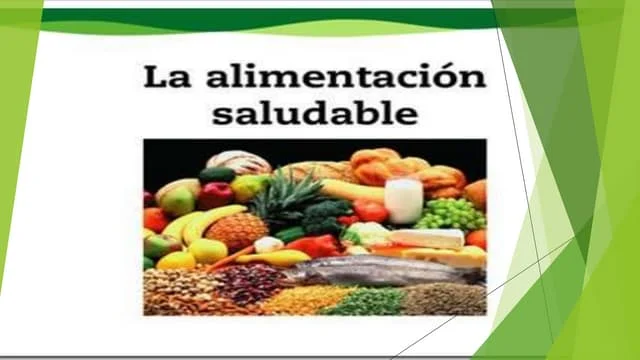

Los beneficios de llevar una buena dietaces la prevencion de multiples enfermedades del corazon, cronicas y tambien mejora la salud emocional y mental
Mucha gente ve los beneficios de una alimentacion saludable pero por problemas de ansiedad o emocionales se los complica el dejar de consumir grandes cantidades de comida, ya que muchas veces lacomida es el refugio de muchas personas.
